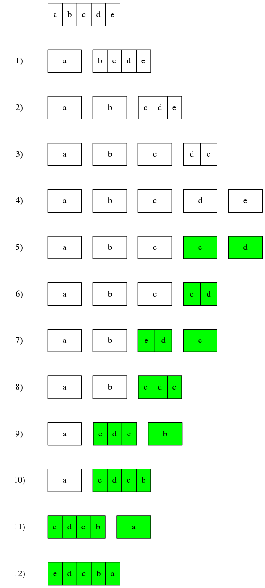

P105: Reverse a list
顛倒列表。用單元測試描述為：
from python99.lists.p105 import reverse, reverse_recursively
def test_reverse():
input = [1, 2, 3, 4, 5, 6]
actual = reverse(input)
assert actual == None
assert input == [6, 5, 4, 3, 2, 1]
Python內建的數據類型list提供了方法reverse()，用於顛倒list中的元素。但reserve()是寫操作。其會直接改變list對象裏面的元素位置，而非生成一個新的元素位置相反的list。
## Reverse a list
def reverse(list):
if list is None:
return []
return list.reverse()
The Python Standard Library >> Sequence Types -- list, tuple, range
如何實現一個祇讀的顛倒列表方法呢？
沒有什麼問題是遞歸解決不了的！
一個列表可被拆分為第一個元素和剩餘列表。假如剩餘列表已經被顛倒了，則祇需將拆分出來的第一個元素和剩餘列表位置顛倒。顛倒兩個物體的位置其實就是交換位置。但問題來了，如何顛倒剩餘列表呢？繼續拆分，直至剩餘列表為空。空列表顛倒前跟顛倒後是一模一樣的。
舉個例子，給定一個列表[ a, b, c, d, e ]。
- 將其拆分為第一個元素
a和剩餘列表[ b, c, d, e ] - 繼續將剩餘列表拆分為第一個元素
b和剩餘列表[ c, d, e ] - 繼續拆分為
c和[ d, e ] - 繼續拆分為
d和[ e ] - 顛倒
d和[ e ]的位置 - 合併
d和[ e ]為一個列表[ e, d ] - 顛倒
c和[ e, d ]的位置 - 合併
c和[ e, d ]為一個列表[ e, d, c ] - 顛倒
b和[ e, d, c ]的位置 - 合併
b和[ e, d, c ]為一個列表[ e, d, c, b ] - 顛倒
a和[ e, d, c, b ]的位置 - 合併
a和[ e, d, c, b ]為一個列表[ e, d, c, b, a ]

代碼實現：
def reverse_recursively(l):
if l == []:
return l
return reverse_recursively(l[1:]) + [l[0]]
單元測試：
def test_reverse_immutable():
assert reverse_recursively([1, 2, 3, 4, 5, 6]) == [6, 5, 4, 3, 2, 1]